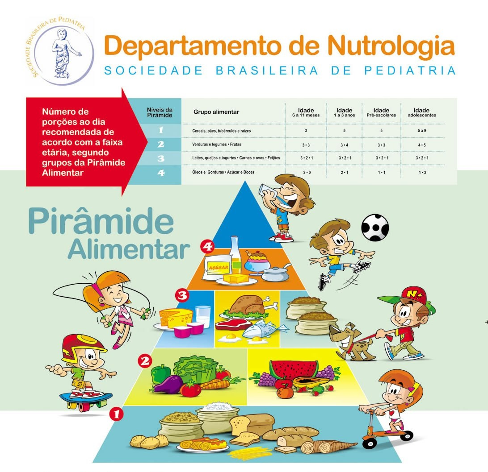

Os cardápios são elaborados por nutricionista especializada levando em consideração os níveis escolares e serviços oferecidos. Acompanhe de perto e acesse de acordo com o nível em que seu filho(a) está matriculado:
O Departamento de Nutrologia da Sociedade Brasileira de Pediatria preparou uma pirâmide alimentar para as crianças, com o significado de cada nível da pirâmide, as quantidades recomendadas para cada faixa etária e a quantidade de alimento que representa uma porção. Assim ficará mais fácil proporcionar uma alimentação saudável e equilibrada para seus filhos.

A alimentação é um dos principais fatores para o bom desenvolvimento das crianças. Além disso, é na infância que se criam hábitos saudáveis para toda a vida.
Os médicos e nutricionistas aconselham quais alimentos ingerir e quais evitar. Para uma alimentação balanceada, que contribui para o desenvolvimento e reforça as imunidades do organismo, é preciso saber dosar cada tipo de alimento.
A sua opinião é muito valiosa!
Este canal foi criado para você ter a voz ouvida! Participe dando sugestões e assim garantir a manutenção da qualidade e segurança da alimentação escolar do seu filho(a)!
Deve-se orientar ou ratificar a necessidade de atendimento contínuo do aluno com AA por serviço de saúde (ao menos por médico e nutricionista), para o devido diagnóstico clínico-laboratorial, orientação e acompanhamento. Tal acompanhamento é fundamental, inclusive, para: diagnosticar a existência de alergia cruzada (a outros alimentos); avaliar periodicamente a aquisição de tolerância; avaliar e acompanhar o estado geral de saúde e, particularmente, o estado nutricional, que pode ser comprometido pelas manifestações das reações alérgicas e/ou pela dieta de exclusão; e para identificar a necessidade de suplementação nutricional. Geralmente AA a leite de vaca, ovo, trigo e soja podem ser autolimitadas, ou seja, desaparecem na infância. Então, exceto em situações de anafilaxia associada, a testagem de provação oral periódica permite avaliar a aquisição de tolerância. Esse processo depende da idade do estudante, do tempo de diagnóstico e do seu histórico, e tem requisitos importantes para sua realização, conforme os protocolos. Assim sendo, recomenda-se que o atestado de AA não seja considerado como condição definitiva, pois a adoção contínua desnecessária de dieta de exclusão pode prejudicar o aluno em longo prazo. Recomenda-se que cada Entidade Executora estabeleça critérios próprios para solicitar ou recomendar ao aluno a renovação do atestado.
O critério para a elaboração do cardápio especial para AA é a completa exclusão do alérgeno alimentar do cardápio e, no caso de lactentes, no uso de leite materno ordenhado ou fórmulas infantis. Não estão estabelecidas modificações em termos de necessidades energéticas e de macro e micronutrientes, devendo-se garantir o aporte nutricional em termos de energia, macro e micronutrientes prioritários.
A dieta de exclusão demanda uma conduta rigorosa dos manipuladores de alimentos no uso somente de alimentos isentos de glúten, no emprego de utensílios exclusivos e na prevenção da contaminação cruzada.Deve-se, então, estabelecer uma sistemática de orientação desses profissionais acerca dos cardápios especiais. Adotar a rotina diária de verificar previamente a presença na escola de estudantes em alimentação especial pode evitar produção desnecessária. Um dos diferenciais na prevenção da contaminação cruzada na DC é que a farinha de trigo se propaga pelo ar. Estima-se que a poeira do trigo pode ficar no ar por até 24 horas. Assim sendo, o desafio é maior em unidades escolares que utilizem farinhas em liquidificadores e batedeiras para fazer bolos e pães. No caso de haver adaptação de receitas que utilizem esses equipamentos, é necessário haver equipamentos exclusivos. Os alimentos com e sem glúten não podem ser preparados juntos.
Para evitar a contaminação cruzada na produção de cardápios especiais sem glúten, pode-se: estocar os alimentos especiais isolados (separados/no alto) em relação aos demais; higienizar adequadamente as superfícies antes de iniciar a produção; começar pela produção do cardápio especial; adquirir potes de tempero e garrafa de óleo exclusivos por contaminação; ter assadeiras, formas, grelhas, chapas exclusivas; não reutilizar papel alumínio, papel manteiga, sacos plásticos e outros; dispor de avental de tecido exclusivo. Outros utensílios podem ser comuns, desde sejam adequadamente higienizados. Deve-se, ainda, promover um ambiente calmo de consumo da alimentação escolar, evitando acidentes e inibindo a troca de alimentos. Quando a distribuição e o consumo ocorrem em sala de aula, pode-se optar por ofertar o mesmo cardápio especial para toda a turma, reduzindo riscos de contaminação cruzada e estimulando a socialização.
Doença Celíaca - DC
É preciso ficar atento a outras situações que podem ocorrer na escola e, assim como nas alergias, são passíveis de serem fonte de contaminação por glúten. São fatos que não estão incluídos na responsabilidade técnica do nutricionista, mas que podem receber nossa atenção.
A DM tem uma importante relação com estilo de vida. Hábitos saudáveis se constituem em fatores de proteção. As unidades escolares têm um papel fundamental na promoção de hábitos alimentares e estilos de vida saudáveis. Estudantes com DM devem ser estimulados a participar das atividades fisicamente ativas, tanto na aula de educação física como em atividades optativas, como as do Programa Mais Educação e as do Escola Aberta. Esse envolvimento pode demandar maior vínculo entre mães, pais ou responsáveis pelos estudantes e a escola, por questões diversas à alimentação escolar, mas que podem ser apoiadas pela área técnica
Diabetes Mellitus-DM
Deve-se orientar a escola em relação aos casos de hiper e hipoglicemia. Convém dispor de alimentos fontes de açúcares simples para o socorro no caso de hipoglicemia. Os educadores devem evitar deixar o estudante sozinho e ter atenção com mudanças do comportamento do estudante. Se necessário, solicitar ao estudante que monitore a glicemia o mais rápido possível.
As DCNT têm uma relação importante com o estilo de vida. Hábitos saudáveis se constituem em fatores de proteção, enquanto que comportamentos como hábitos alimentares não saudáveis, inatividade física, abuso de álcool e tabagismo estão ligados ao seu desenvolvimento. Nesse sentido, as unidades escolares têm um papel fundamental na promoção de hábitos alimentares e estilos de vida saudáveis. É necessário recomendar aos gestores escolares e educadores atenção no sentido de desenvolver atividades pedagógicas que abordem e promovam esses temas de maneira transversal no currículo escolar, em horário regular e extraclasse, inclusive em escolas aderidas ao Programa Mais Educação e ao Escola Aberta, enfocando as recomendações do Guia Alimentar para a População Brasileira4. Alunos com DCNT devem ser estimulados a participar das atividades fisicamente ativas, tanto nas aulas de educação física, quanto nesses dois programas. Recomenda-se, ainda, promover a implantação de hortas escolares, que podem contribuir com a disponibilidade permanente de temperos e constituir-se instrumento pedagógico de educação alimentar e nutricional.
Sabe-se que é preconizada dietoterapia com a oferta de uma quantidade reduzida e fracionada de lactose para algumas situações ou durante algumas fases do tratamento da IL, desde que o paciente não apresente sintomas, pois a exclusão total de lactose pode dificultar a ingestão de fontes de outros nutrientes e tornar a IL mais crônica ou até irreversível, além do seu impacto social. No sentido de padronizar cardápios especiais da alimentação escolar, entretanto, optou-se por recomendar a restrição total de lactose. Alunos que tiverem prescrição de dieta com quantidade reduzida de lactose terão maior flexibilidade, então, para consumir alimentos com lactose nas refeições privadas e com a família. Nesse contexto, a contrarreferência ao prescritor e/ou a referência para nutricionista da rede de saúde são consideradas fundamentais.
Intolerância à Lactose
O critério recomendado para a elaboração do cardápio especial para IL na alimentação escolar é a exclusão de alimentos fonte de lactose. Cardápios especiais com quantidade reduzida e controlada de lactose podem ser planejados, quando assim prescrito, exigindo maior atenção e treinamento para sua produção, porcionamento e distribuição. Não estão estabelecidas modificações em termos de necessidades energéticas e de macro e micronutrientes, devendo-se garantir o aporte nutricional conforme normativa do PNAE, com atenção para a oferta de cálcio. Fórmulas infantis, vegetais de folha verde (brócolis, couves, acelgas, alfaces) e produtos do mar (principalmente sardinhas em conserva, atum e salmão) podem contribuir com o aporte de cálcio
O Programa Nacional de Alimentação Escolar (Pnae) prevê que o cardápio das escolas “deve respeitar as referências nutricionais, os hábitos alimentares, a cultura alimentar da localidade”. Também destaca que deve “atender as especificidades culturais das comunidades indígenas e/ou quilombolas”.
De acordo com um levantamento feito pelo Fundo Nacional de Desenvolvimento da Educação (FNDE) em 2013, o Pnae atendia a mais de 237 mil alunos em escolas indígenas em todo o país. A região Norte tem o maior número de escolas indígenas, com mais de mil e oitocentas. De todo o Brasil, o estado do Amazonas tem mais de 58 mil alunos matriculados em mais de 940 escolas indígenas.
O programa atende todos os alunos matriculados na educação básica das redes públicas federal, estadual, distrital e municipal, inclusive as escolas localizadas em áreas indígenas. Além disso, determina que 30% do orçamento seja destinado a aquisição de alimentos diversificados, produzidos preferencialmente pela agricultura familiar e pelos empreendedores familiares rurais, priorizando as comunidades tradicionais indígenas e de remanescentes de quilombos. O estímulo a compra de alimentos regionais é uma forma de respeitar e resgatar os hábitos alimentares desses povos.
Indígenas e Quilombolas
Mas como saber quais alimentos devem ser comprados para as escolas indígenas? Nesse caso, o Pnae conta com a participação da sociedade civil no Conselho de Alimentação Escolar como instrumento de controle social. Nos estados e municípios que possuem alunos matriculados em áreas indígenas ou quilombolas, é recomendado que pelo menos um dos representantes seja desses povos ou comunidades tradicionais.